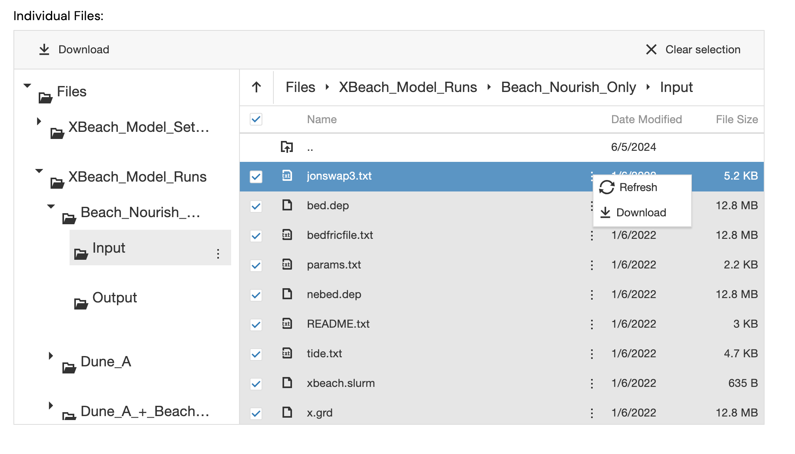

XBeach#
XBeach is a simulator with a two-dimensional model for wave propagation,
sediment transport and morphological changes in the nearshore area. The
simulator is configured with a params.txt file that contains grid and
bathymetry info, wave input, flow input, morphological input, etc. in the form
of keyword/value pairs. If a params.txt cannot be found then XBeach will not
run. Other files are used to configure the grid and bathymetry profile, like
bed.dep for example, and other files with extra information that can be used
inside the params.txt to configure the simulator further.
We advise to always set the mpiboundary argument in the params.txt file,
since we handle automatically the parallelization of the simulation, based on
the number of cores available in the machine.
Example#
import inductiva
# Download example configuration files from Inductiva storage
input_dir = inductiva.utils.download_from_url(
"https://storage.googleapis.com/inductiva-api-demo-files/"
"xbeach-input-example.zip", unzip=True)
# Initialize the Simulator
xbeach = inductiva.simulators.XBeach()
# Run simulation with configuration files in the input directory
task = xbeach.run(
input_dir=input_dir,
sim_config_filename="params.txt")
task.wait()
task.download_outputs()
A more advanced example#
We are now going to run a much longer simulation, namely one whose configuration scripts and input data are made available via the GRIIDC, a data repository based out of the Harte Research Institute for Gulf of Mexico Studies at Texas A&M University-Corpus Christi.
More specifically, we will run one of simulations described in “XBeach model setup and results for beach and dune enhancement scenarios on Galveston Island, Texas”, which is made available here.
We will start by downloading the required input files. At the bottom of the dataset page you will find a widget for downloading indvidual files. We will need to download the contents of an entire directory. Using the widget, please select: Files >> XBeach_Model_Runs >> Beach_Nourish_Only >> Input.
Select all files inside the directory using the checkbox and click on the elipsis “⋮” to download them:

Move all files to a directory named “Beach_Nourish_Only” inside your Inductiva python project directory. Inside the “Beach_Nourish_Only” you should then have something like:
ls -las Beach_Nourish_Only
total 130976
0 drwxr-xr-x 12 384 5 Jun 16:13 .
0 drwxr-xr-x 3 96 5 Jun 16:14 ..
8 -rw-r--r--@ 1 3069 5 Jun 16:12 README.txt
26184 -rw-r--r--@ 1 13404906 5 Jun 16:12 bed.dep
26184 -rw-r--r--@ 1 13404906 5 Jun 16:12 bedfricfile.txt
16 -rw-r--r--@ 1 5324 5 Jun 16:12 jonswap3.txt
26184 -rw-r--r--@ 1 13404906 5 Jun 16:12 nebed.dep
8 -rw-r--r--@ 1 2281 5 Jun 16:12 params.txt
16 -rw-r--r--@ 1 4850 5 Jun 16:12 tide.txt
26184 -rw-r--r--@ 1 13404906 5 Jun 16:12 x.grd
8 -rw-r--r--@ 1 635 5 Jun 16:12 xbeach.slurm
26184 -rw-r--r--@ 1 13404906 5 Jun 16:12 y.grd
We are going to run this simulation, almost as it is, with only two small
changes to the parametrization defined in params.txt. First, we will need to
add an extra configuration parameter to account for the fact the API is already
running XBeach v10+, but the original simulation configuration files where
prepared for an older version of XBeach. So will need to add the following line
to params.txt (you can add it right at the top, after the header):
single_dir = 0
Second, to reduce the time to complete this simulation, we will change the stop
time of simulation, tstop, to just 34560 (10x less than original
parametrization). Find the tstop parameter in params.txt and change the
value to 34560.
That’s it! We won’t do any more changes. Let’s start the simulation. The python script we are going to use to trigger the simulation is:
import inductiva
machine_group = inductiva.resources.MachineGroup(
machine_type="c3d-highcpu-90",
spot=True,
data_disk_gb=20)
machine_group.start()
# Initialize the Simulator
xbeach = inductiva.simulators.XBeach()
# Run simulation with config files in the input directory
task = xbeach.run(
input_dir="Beach_Nourish_Only",
sim_config_filename="params.txt",
n_vcpus=90,
on=machine_group)
# task.wait() is a blocking call and will only return when the simulation
# ends. However, you can close your terminal without interrupting the
# simulation and use Inductiva CLI (Command Line Interface) tools to
# check the status of the simulation from another terminal.
task.wait()
# Terminate your dedicated MachineGroup at then end of the simulation.
machine_group.terminate()
# Let's get a small summary of the run.
task.print_summary()
There are a few of things you should notice in the script above:
We are not requesting the outputs of the simulation to be donwloaded to our local machine immediately after we run the simulation. That could be done by calling
task.download_outputs()in this script right aftertask.wait(). Instead, we opted for just letting the simulation finish and turning off the machine we are using. We will download the outputs later, after checking the size of the output that will be automatically placed in our remote personal storage when the simulation ends.Finally, we are calling
task.print_summary()that shows the times spent at all stages of the run, including all auxiliary tasks, such as moving data around between your local computer, your personal remote storage space and the executer machine (i.e. thec3d-highcpu-90VM.)
Running this script takes about 55 minutes and it should produce an output similar to the one below (note that the values shown for the quotas you have available may be different from the ones shown in this run):
python run.py
Registering MachineGroup configurations:
> Name: api-d4gzm10qxwvjus7mc58o4033o
> Machine Type: c3d-highcpu-90
> Data disk size: 20 GB
> Number of machines: 1
> Spot: True
> Estimated cloud cost of machine group: 1.230 $/h
>> You are spending 3.0x less by using spot machines.
Starting MachineGroup(name="api-d4gzm10qxwvjus7mc58o4033o"). This may take a few minutes.
Note that stopping this local process will not interrupt the creation of the machine group. Please wait...
Machine Group api-d4gzm10qxwvjus7mc58o4033o with c3d-highcpu-90 machines successfully started in 0:00:22.
The machine group is using the following quotas:
USED BY RESOURCE CURRENT USAGE MAX ALLOWED
cost_per_hour 1.23045 1.23045 50
total_num_machines 1 1 10
total_num_vcpus 90 90 500
Task Information:
> ID: 9ob6gknv794pvazg5bzd4oczo
> Method: xbeach
> Local input directory: Beach_Nourish_Only
> Submitting to the following computational resources:
>> Machine Group api-d4gzm10qxwvjus7mc58o4033o with c3d-highcpu-90 machines
Preparing upload of the local input directory Beach_Nourish_Only (67.04 MB).
Input archive size: 9.32 MB
Uploading input archive...
100%|███████████████████████████████████████████████████████████████████████████| 9.32M/9.32M [00:01<00:00, 5.44MB/s]
Local input directory successfully uploaded.
Task 9ob6gknv794pvazg5bzd4oczo submitted to the queue of the Machine Group api-d4gzm10qxwvjus7mc58o4033o with c3d-highcpu-90 machines.
Number of tasks ahead in the queue: 0
Simulation metadata logged to: inductiva_output/task_metadata.json
Task 9ob6gknv794pvazg5bzd4oczo configurations metadata saved to the tasks metadata file task_metadata.json in the current working directory.
Consider tracking the status of the task via CLI:
inductiva tasks list --id 9ob6gknv794pvazg5bzd4oczo
Or, tracking the logs of the task via CLI:
inductiva logs 9ob6gknv794pvazg5bzd4oczo
Task 9ob6gknv794pvazg5bzd4oczo successfully queued and waiting to be picked-up for execution...
The task 9ob6gknv794pvazg5bzd4oczo is about to start.
Task 9ob6gknv794pvazg5bzd4oczo has started and is now running remotely.
Task 9ob6gknv794pvazg5bzd4oczo completed successfully.
Downloading stdout and stderr files to inductiva_output/9ob6gknv794pvazg5bzd4oczo...
Partial download completed to inductiva_output/9ob6gknv794pvazg5bzd4oczo.
Successfully requested termination of MachineGroup(name="api-d4gzm10qxwvjus7mc58o4033o").
Termination of the machine group freed the following quotas:
FREED BY RESOURCE CURRENT USAGE MAX ALLOWED
cost_per_hour 1.23045 0 50
total_num_machines 1 0 10
total_num_vcpus 90 0 500
Task status: success
Wall clock time: 0:52:41
Time breakdown:
Input upload: 3.65 s
Time in queue: 58.57 s
Container image download: 1.64 s
Input download: 0.19 s
Input decompression: 0.21 s
Computation: 0:51:13
Output compression: 18.31 s
Output upload: 6.12 s
Data:
Size of zipped output: 390.13 MB
Size of unzipped output: 668.23 MB
Number of output files: 28
The summary is pretty handy to understand that almost 99% of the (wall clock) time is spent where is should be: on the computation stage, i.e. actually executing the simulation.
Note: As seen in the code above, we are using a machine with 90 vCPUs and,
in the method run(), we are requesting the simulation to be parallelized
over all of those 90 vCPU. In some cases, parallelizing the simulation over only
half of the available vCPUs leads to better peformance. This is because the
virtualization scheme of these VMs assigns two vCPU per underlying physical
core. So, by setting n_vcpus to half the number of vCPUs we are implicitly
assigning one thread per physical core, which, is many cases, is more efficient
because there is less competition for cache, and less I/O contention. However,
this is NOT the case for this specific simulation with XBeach. In fact, running
the simulation on the same machine and setting n_vcpus=45 will make the
computation about 35% slower.
Downloading simulation data#
Now, it is time to fecth the results. We will be downloading a zip file with 390MB of data (as shown in the summary). This can be done very conveniently using the CLI. So, from your command line run (with the appropriate task id that you can see above):
inductiva tasks download 9ob6gknv794pvazg5bzd4oczo
Depending on the speed of your internet connection, donwloading thie files may take a few seconds or a few minutes:
Downloading simulation outputs to inductiva_output/9ob6gknv794pvazg5bzd4oczo/output.zip...
100%|█████████████████████████████████████████████████████████████████████████████| 390M/390M [00:52<00:00, 7.48MB/s]
Uncompressing the outputs to inductiva_output/9ob6gknv794pvazg5bzd4oczo...
If you now look under inductiva_output/9ob6gknv794pvazg5bzd4oczo
(please check the id of the task that you actually run on your terminal) inside
your project directory you should see something like:
ls -las inductiva_output/9ob6gknv794pvazg5bzd4oczo
total 1309960
0 drwxr-xr-x 29 928 19 Jun 11:41 .
0 drwxr-xr-x 23 736 19 Jun 11:27 ..
35224 -rw-r--r-- 1 18033840 19 Jun 11:41 E_series00001.bcf
35224 -rw-r--r-- 1 18033840 19 Jun 11:41 E_series00002.bcf
35224 -rw-r--r-- 1 18033840 19 Jun 11:41 E_series00003.bcf
35224 -rw-r--r-- 1 18033840 19 Jun 11:41 E_series00004.bcf
35224 -rw-r--r-- 1 18033840 19 Jun 11:41 E_series00005.bcf
35224 -rw-r--r-- 1 18033840 19 Jun 11:41 E_series00006.bcf
35224 -rw-r--r-- 1 18033840 19 Jun 11:41 E_series00007.bcf
35224 -rw-r--r-- 1 18033840 19 Jun 11:41 E_series00008.bcf
35224 -rw-r--r-- 1 18033840 19 Jun 11:41 E_series00009.bcf
35224 -rw-r--r-- 1 18033840 19 Jun 11:41 E_series00010.bcf
216 -rw-r--r-- 1 109588 19 Jun 11:41 XBlog.txt
8 -rw-r--r-- 1 1227 19 Jun 11:41 XBwarning.txt
8 -rw-r--r-- 1 860 19 Jun 11:41 ebcflist.bcf
14096 -rw-r--r-- 1 7213536 19 Jun 11:41 q_series00001.bcf
14096 -rw-r--r-- 1 7213536 19 Jun 11:41 q_series00002.bcf
14096 -rw-r--r-- 1 7213536 19 Jun 11:41 q_series00003.bcf
14096 -rw-r--r-- 1 7213536 19 Jun 11:41 q_series00004.bcf
14096 -rw-r--r-- 1 7213536 19 Jun 11:41 q_series00005.bcf
14096 -rw-r--r-- 1 7213536 19 Jun 11:41 q_series00006.bcf
14096 -rw-r--r-- 1 7213536 19 Jun 11:41 q_series00007.bcf
14096 -rw-r--r-- 1 7213536 19 Jun 11:41 q_series00008.bcf
14096 -rw-r--r-- 1 7213536 19 Jun 11:41 q_series00009.bcf
14096 -rw-r--r-- 1 7213536 19 Jun 11:41 q_series00010.bcf
8 -rw-r--r-- 1 860 19 Jun 11:41 qbcflist.bcf
8 -rw-r--r-- 1 1370 19 Jun 11:41 stderr.txt
256 -rw-r--r-- 1 109975 19 Jun 11:41 stdout.txt
816256 -rw-r--r-- 1 415526280 19 Jun 11:41 xboutput.nc
that contains all the files produced by XBeach, as well as two additional log
files that the Inductiva API always captures: stdout.txt and stderr.txt.
Now that you have your files locally, you can execute all sorts of
post-processing steps on them, as you would if you had run your simulations
locally.
That’s it! You can now go bigger! You can start by trying to run the complete
simulation (the original parameter is tstop = 345600) on an even faster
machine such as a c3d-highcpu-180!
Good luck!
What to read next#
To better understand how you can optimize your XBeach runs, we invite you to read the XBeach benchmark that we prepared for you on our official benchmarks site. You will be able to compare the performance of XBeach on several hardware configurations for a simulation scenario involving the Cova Gala beach in the north of Portugal. This beach has been the focus of several studies over the years due to its high erosion rates.
You may also be interested in checking the documentation related with other coastal dynamic / hydrology simulators that are avaiable via Inductiva API: